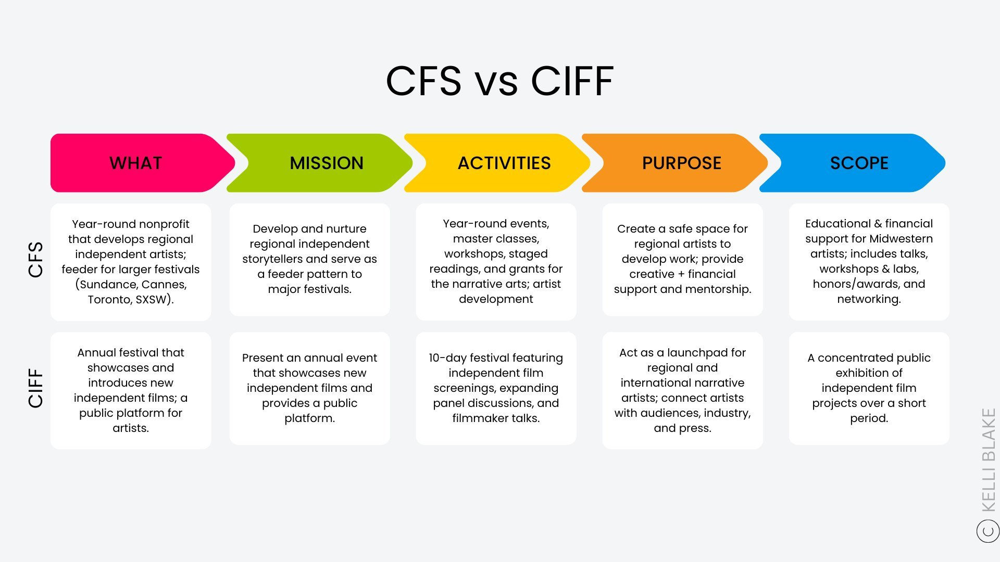
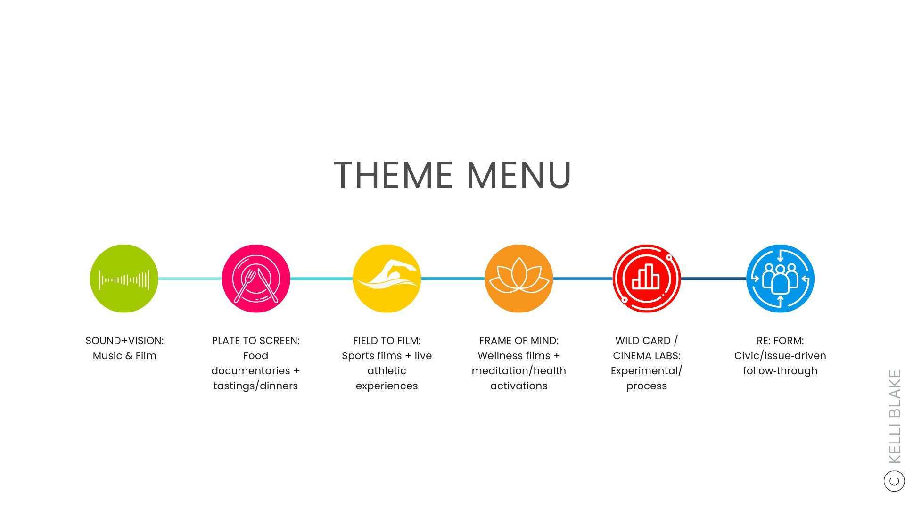
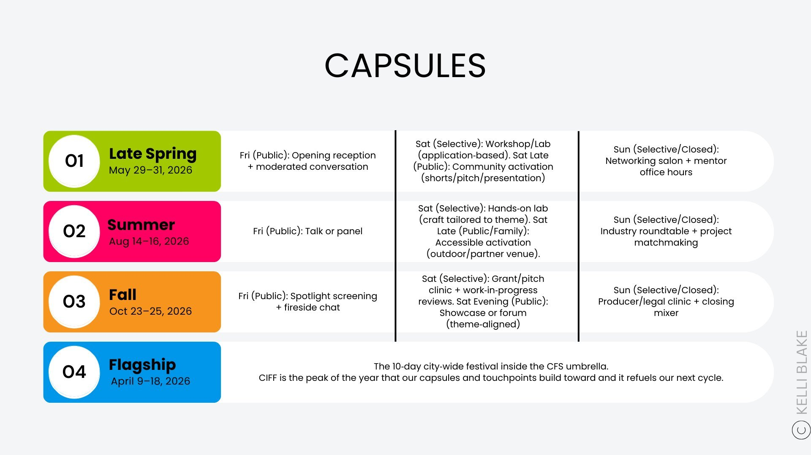
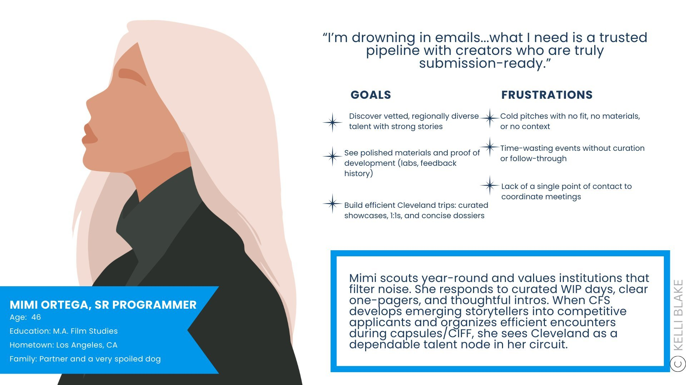

Case Study · December 2024 – February 2026
Transforming a Film Festival into a Film Society
An 8-month engagement repositioning the Cleveland International Film Festival from a single marquee event into a year-round cultural institution — with the strategic frameworks, revenue infrastructure, and programming architecture to make it last.
Engagement
Presentation
Delivered
& One Sheets
Event to
Year-Round
The Situation
A beloved institution at a crossroads
CIFF had built a 50-year legacy as one of the country's most respected film festivals. But heading into its 50th anniversary year, the organization faced a convergence of challenges that made the status quo unsustainable.
51–57% of attendees were 60+. The festival audience was 84–90% white in a city that is 70% non-white. Revenue was volatile — in 2018, the highest attendance year produced a net loss. And outside of the annual 10-day festival, CIFF had no meaningful year-round presence.
The question wasn't whether to change. It was whether the organization had a framework for what to change into.
Originally hired for "Program Revenue Strategy Design," the engagement quickly evolved into something larger: a comprehensive repositioning for the 50th anniversary year and beyond.
Two unsolicited strategic reports were delivered in December 2024 and June 2025 before the formal contract began in July 2025 — establishing the conceptual foundation for everything that followed.
How It Unfolded
From first conversation to full transformation
The Core Idea
One organization, many ways to belong
The central strategic insight: CIFF wasn't the organization — it was the flagship program within a larger organization. Separating these identities unlocked everything else.
Year-round nonprofit developing regional independent storytellers. Mission: nurture Midwestern artists and serve as a feeder to major festivals (Sundance, Cannes, Toronto, SXSW). Activities: masterclasses, workshops, staged readings, grants, capsule events, networking.
The annual 10-day festival — the peak of the year that capsules and touchpoints build toward. A concentrated public exhibition and launchpad for artists. The crown jewel, not the whole crown.

Programming Architecture
A year-round rhythm built to sustain
Designed three seasonal Capsule weekends, a monthly masterclass series, and a full 12-month activation calendar — each element reinforcing the others and building toward CIFF as the annual pinnacle.



"I LOVE what you've put together. I'm going to dive in more deeply over the weekend, but let you know I received it and am really excited by your proposal."
— Hermione Malone, Executive Director, CIFF · June 20, 2025
Revenue Infrastructure
A complete sponsorship operating system
Built the revenue infrastructure from the ground up — not just decks, but the full stack of systems, tools, and materials needed to run a year-round sponsorship operation.
- CIFF 2026 Master Sponsorship Deck
- Film Society 2026 Sponsor Deck (v1)
- Centerpiece Film Sponsorship ($25K package)
- Passholder Lounge package
- Opening / Closing Night / Awards pages
- Andscape (ESPN) bespoke proposal
- Bespoke one-sheet system + copy blocks
- CRM pipeline (fields, stages, hygiene rules)
- Master Sponsor Spreadsheet + tracking
- Commission-based sales model proposal
- Monthly KPI memo framework
- "How to Intro" staff enablement guide
- Wrap report template + toolkit
- Network partner outreach email templates
- Stakeholder interview synthesis report
- Audience analysis + positioning language
- Transitional org chart
- Membership + donor tier redesign
- 12-month activation calendar
- Strategic planning environmental analysis
- Press clips consolidated report
- RE:FORM full event book (run-of-show, access plan, timeline)
- Outside Voices Masterclass framework
- Outside Voices Table Reads framework
- CIFF HONORS program concept
- The Wardrobe Room experience concept
- Confirmed: DPA, Video Consortium, Firelight Media agreements
"What you're proposing makes a lot of sense and helps to break us out of the static infrastructure you called out in the SWOT analysis."
— Hermione Malone, Executive Director, CIFF · June 25, 2025
What Was Left Behind
Not a report. A transformation roadmap.
Every deliverable was built for implementation, not the shelf — complete with the tools, systems, and frameworks needed to execute.
2 Phases
Transformation Deck
Partner Agreements
& One Sheets
Lanes Designed
Developed
(Masterclass + Table Reads)
Repositioning